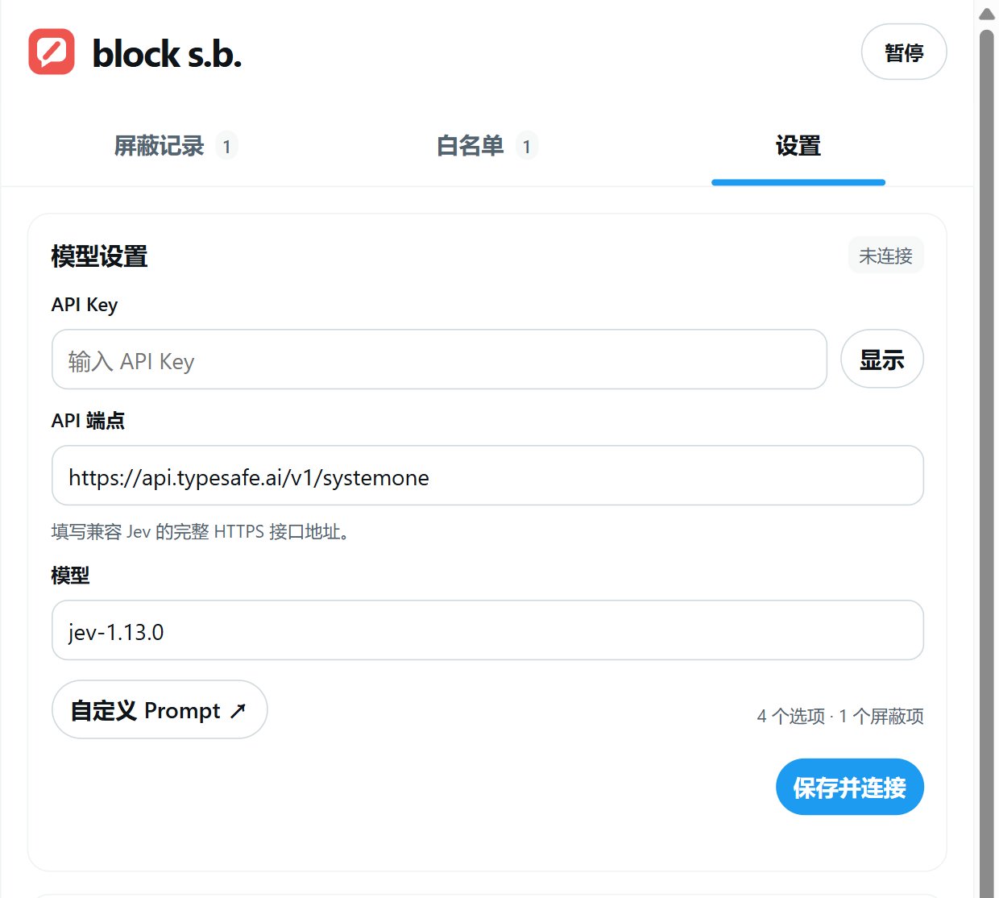
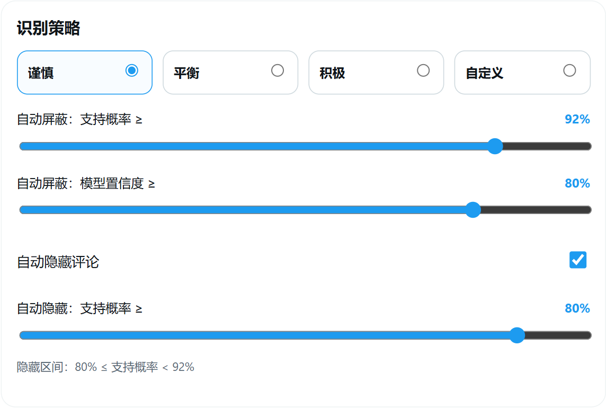
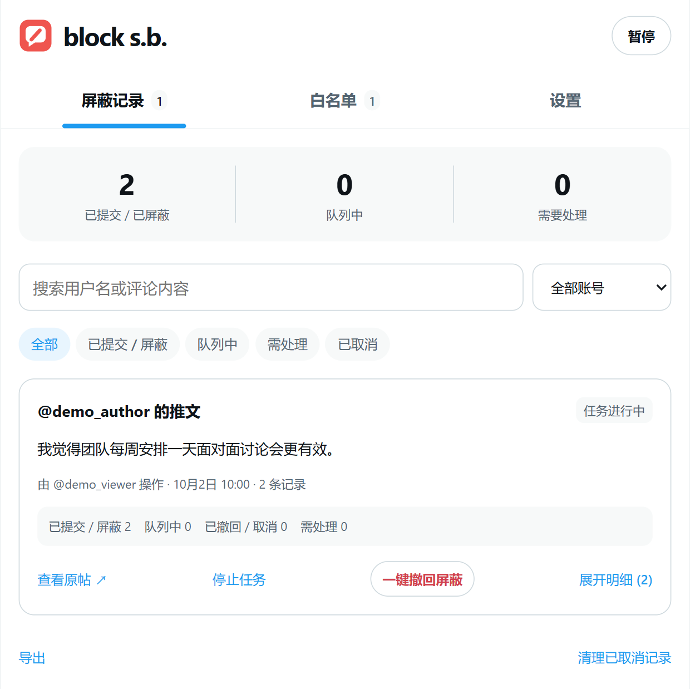
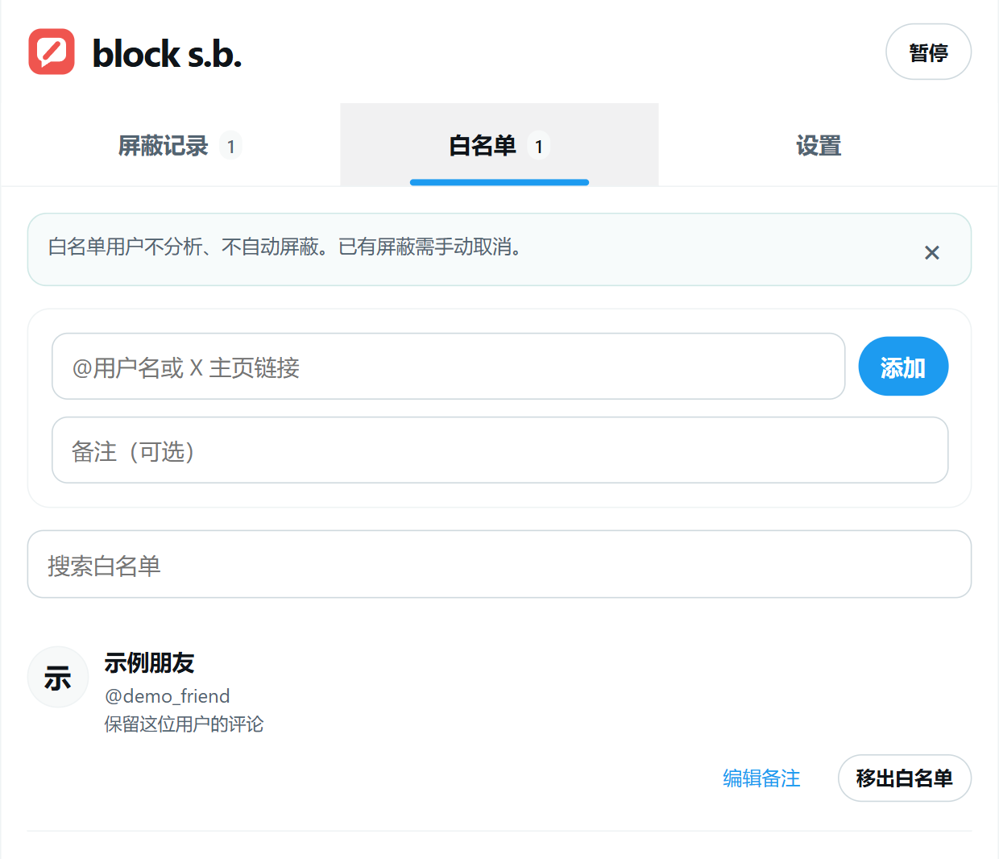

block s.b.
使用教程01 / 04安装插件，连接 Jev
桌面 Chrome · X / Twitter 网页
1加载扩展
下载项目源码并解压。
打开 chrome://extensions，
开启「开发者模式」。
点击「加载已解压的扩展程序」，
选择包含 manifest.json
的项目文件夹。
2打开「设置」
固定扩展图标，刷新 X 页面。
点击扩展图标，在顶部标签中
选择「设置」。
3保存并连接
填写自己的 Jev API Key。
使用官方服务时，保留默认端点
和模型，点击「保存并连接」。
安装源码无需 Node.js；不要选择 src/。
设置 → 模型设置当前项目界面截图

API Key 请填写你自己的密钥，截图中留空。
使用前了解费用与数据去向连接检查和评论分析都会调用模型服务，可能产生费用。原帖、当前评论及必要的上下文会发送给你配置的服务。
block s.b.
使用教程02 / 04从原帖菜单启动任务
默认规则：识别赞同原帖的评论，按设置屏蔽账号。
第 1 步
选择第一项
点击「屏蔽 @用户名
及其评论区的支持者」。
插件进入所选帖子的详情页。
第 2 步
等待评论就绪
插件通过页面菜单切换到「最近」。
首批评论就绪后，原帖作者
进入屏蔽队列，开始评论分析。
第 3 步
继续加载评论
自己向下滚动，或在页面右下角
任务栏开启「自动加载」。
自动加载默认关闭。
只在主动启动的评论区工作。打开管理面板不会启动分析，也不会自动扫描首页。
插件只能处理 X 实际提供的回复，不能保证读取全部评论。
页面隐藏仅作用于对应原帖评论区；实际屏蔽关系由 X 执行。
离开原帖 ≠ 取消已入队的屏蔽离开页面后，已入队操作仍会在后台继续。任务栏的「结束」会取消尚未提交的自动屏蔽；已提交的操作需要到记录中撤回。
block s.b.
使用教程03 / 04看懂阈值，再调整策略
设置 → 识别策略 · 下图为默认「谨慎」配置
什么时候自动屏蔽？
模型判定支持原帖，且
支持概率 ≥ 92%、
模型置信度 ≥ 80%，
同时满足后加入屏蔽队列。
什么时候只隐藏？
判定支持原帖，且支持概率
80% ≤ 概率 < 92%时，
覆盖遮罩并保留评论高度。
点击「查看原文」仍可阅读。
其余情况保留原文
反对、无关、无法判断，或
没有满足处理条件时保留。
概率 ≥ 92% 但置信度不足，
也不会自动屏蔽。
识别策略当前项目界面截图

支持概率和模型置信度是两个独立条件，需要同时达到阈值。
调整后记得保存修改策略后，点击设置页底部的「保存设置」。评论旁的概率标签可悬停查看各选项概率和模型置信度。
概率是筛选条件，不是准确率承诺反讽、玩笑或不完整上下文可能导致误判。目前按文本判断，不读取图片或视频中的观点；自定义规则会改变判定类别。
block s.b.
使用教程04 / 04检查记录，设置白名单
点击扩展图标，或任务中的垃圾桶，打开管理面板。
屏蔽记录：检查与撤回
按原帖分组，区分执行操作的账号

点击「展开明细」查看账号与触发评论；
通过「一键撤回屏蔽」撤回整组，
或在明细中单独取消。
撤回时，保持同一登录账号的
任意 X 页面打开即可。
白名单：保留指定用户
输入 @用户名或 X 主页链接添加

白名单用户不分析、不自动屏蔽，
其内容不会发送给 Jev。
加入后会取消尚未提交的相关屏蔽。
加入白名单不会解除已有屏蔽。
已经屏蔽的账号，需要在记录中取消。
整组撤回前，先检查账号明细撤回可能解除你此前已有的屏蔽。「已提交」仅表示 X 返回请求成功响应，插件未额外查询屏蔽关系。